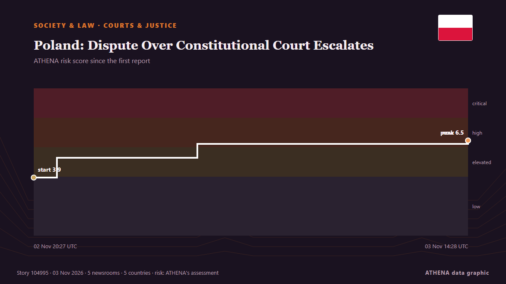

المحاكم والقضاء
| 21 أكتوبر | 0 |
|---|---|
| 22 أكتوبر | 0 |
| 23 أكتوبر | 0 |
| 24 أكتوبر | 0 |
| 25 أكتوبر | 0 |
| 26 أكتوبر | 0 |
| 27 أكتوبر | 0 |
| 28 أكتوبر | 0 |
| 29 أكتوبر | 0 |
| 30 أكتوبر | 3 |
| 31 أكتوبر | 4 |
| 1 نوفمبر | 4 |
| 2 نوفمبر | 10 |
| 3 نوفمبر | 3 |
تُعرض العناوين بالإنجليزية كما نُشرت.

Poland: Dispute Over Constitutional Court Escalates
Poland’s dispute over the constitutional court has escalated, with President Nawrocki blocking the swearing-in of five newly elected judges. من Kyiv Post
US Judge Dismisses Trump Administration’s Harvard Admissions Probe Case
BOSTON: A federal judge on Monday dismissed a lawsuit by President Donald Trump’s administration seeking to force Harvard University to turn over records for an investigation into whether it… من Arab News
Trump asks Supreme Court to sideline 20,000 California mail ballots
President Donald Trump's administration appealed to the Supreme Court on Monday in its push to sideline thousands of disputed California mail ballots the day before the pivotal midterm elections. من The Korea Times
Poland's in the midst of a constitutional crisis. Here's what's happening
A decade-long dispute in Poland over one of its top courts has come to a head, with the country's prime minister and president at loggerheads, and protests outside the Constitutional Tribunal in… من CBC News
Dia Mirza Diwali appeal row: Deeply pained, says HC; asks BMC to re-upload video
The Bombay high court found the Brihanmumbai Municipal Corporation's removal of Dia Mirza's video unfortunate and requested its restoration. من Times of India
Jury sworn in for trial of man accused of murdering Chloe Mitchell
Brandon John Rainey has also been accused of attempting to prevent the burial of the 21-year-old’s body. من Evening Standard (London)
Coup or restoration? Poland’s constitutional court standoff divides Europe
Poland's constitutional court is in chaos: A pro-EU government installs judges by force, suspends its old leadership and the hard-right opposition calls it a coup. من Courthouse News
Ginkgo biloba: an ancient remedy with modern appeal
An expert explains why this plant, used in traditional medicine for over 1,000 years, remains one of the world's most popular herbal supplements. من Free Malaysia Today
Judge Dismisses Trump's $10 Billion Lawuit Against Wall Street Journal Over Epstein Letter
Trump had sued for $10 billion after the newspaper's story was published in July 2025 detailing the president's alleged 2003 letter to Epstein, which apparently featured a drawing of a naked woman. من NDTV
US judge tosses case against ex-FBI officials accused of lying about Hunter Biden probes
US Magistrate Judge Zia Faruqui dismissed the case at a remarkably early stage, finding that prosecutors had not shown sufficient evidence that the two officials knowingly made false statements. من The Jerusalem Post
Rachin Ravindra, Mark Chapman ruled out of New Zealand’s ODI series vs India
Coach Rob Walter says Ravindra is fine to bat, but the risk of diving on his recovering shoulder rules him out of the five-match India series. من Stuff
Russell Brand Is Not ‘Some Kind of Psychopath Who Rapes People and Thinks It’s Normal,’ Defense Lawyer Says in Closing Argument
Russell Brand’s lawyer has told the jury there is “no evidence” that the comedian is “some kind of psychopath who rapes people and thinks it’s normal” in his closing argument. من Variety
Brussels sides with Donald Tusk in Poland’s court crisis
The confrontation has attracted a response from France's Marine Le Pen and Slovenia's Janez Janša. من Euractiv
Polish PM Donald Tusk accuses Russia of backing opponents amid constitutional crisis
Polish Prime Minister Donald Tusk has accused Russia of supporting his political opponents amid an escalating dispute over the country's Constitutional Tribunal, warning that the crisis threatens the… من AzerNews
Korean judges encounter AI-generated fake legal precedents: Survey
SEOUL: Eight in 10 South Korean judges have experienced court cases in which false or nonexistent legal precedents generated by artificial intelligence (AI) were cited, a recent survey by the Supreme… من New Straits Times
Sinn Féin and SDLP welcome Taoiseach's plan to create new body to examine Irish unity
It’s understood the Taoiseach will bring a memorandum before Christmas proposing a new body to examine Ireland’s constitutional future, including Irish unity. من TheJournal.ie
Poland's Constitutional Court crisis deepens as judges allege coup attempt
Poland has been plunged into a constitutional confrontation after police entered the Constitutional Tribunal and its president was reportedly suspended from office, prompting allegations of a coup… من AzerNews
Polish president calls crisis talks after court standoff
Karol Nawrocki cut short a trip to Senegal and returned to Warsaw. من Euractiv